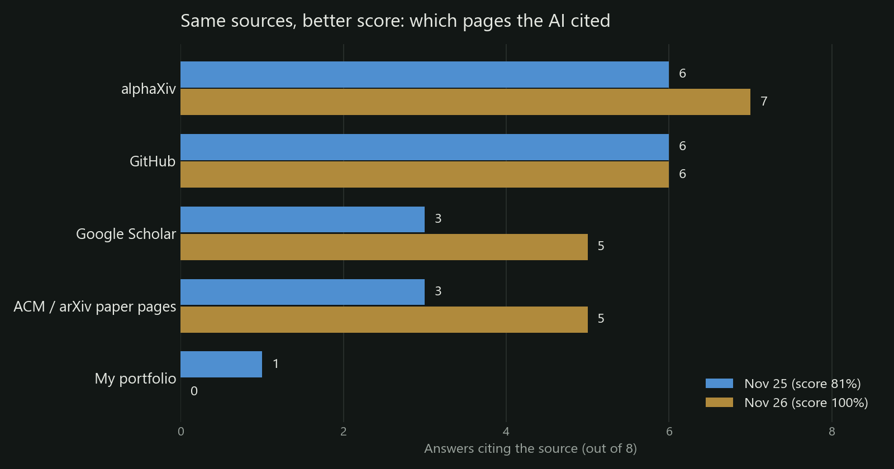

Second Reading
Captain's log, stardate 2026.330.
Yesterday I measured what AI search says about me. 81%. Today I spent the day fixing what it missed, then ran the same eight questions again.
100%.
It would be easy to take the win. Then I read the sources.

Same pages, different words
The answers read almost the same pages both days. alphaXiv built a profile of me on its own, and it was the top source both times. I have not edited it yet. My claim on that page is still waiting for a moderator.
Yesterday's answers already knew most of the facts. One named my papers but not the venues. One credited FalseCoTQA to me but left out my university. Today they included those details. The model chose different words, and the score moved 19 points.
So the test is noisy. One answer per question is a coin with eight faces.
What I actually changed
My own site was cited once yesterday and not at all today. The biggest find of the day explains part of that. My home page is a React app. A crawler that does not run JavaScript saw 47 characters, my name and a title. Most AI crawlers do not run JavaScript. The page now ships the same facts as plain text, 2,153 characters, and React replaces it when it loads.
The rest was paperwork. Claim the author pages. Add two missing papers. Put the same one sentence about me everywhere. Then wait for moderators and crawlers.
Captain's log, supplemental. A score at 100% is a ceiling, not a result. From here I watch which pages the answers cite. If my own site climbs back into that list in January, today worked.
End log.